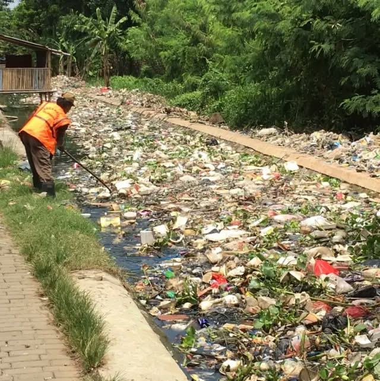

Plastik adalah bahan yang praktis, murah, dan ada di mana-mana. Justru karena itulah plastik menjadi salah satu penyumbang sampah terbesar. Sebagian besar plastik tidak terurai secara alami, ia hanya pecah menjadi serpihan yang makin kecil yang disebut mikroplastik.
Dampaknya bagi laut
Hewan laut sering mengira serpihan plastik sebagai makanan. Penyu, burung laut, dan ikan dapat tersedak atau kenyang oleh plastik sehingga kekurangan nutrisi. Mikroplastik juga dapat masuk ke rantai makanan dan akhirnya sampai ke piring kita.
Plastik tidak pernah benar-benar hilang, ia hanya berpindah tempat.

Cara menguranginya
- Bawa tas belanja, botol minum, dan wadah makan sendiri.
- Tolak sedotan dan kantong plastik sekali pakai.
- Pilih produk isi ulang atau kemasan besar.
- Pilah plastik bersih dan setorkan ke Bank Sampah.

Langkah kecil yang dilakukan banyak orang akan menghasilkan perubahan besar. Mulailah dari satu kebiasaan baru minggu ini.